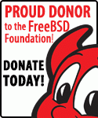

Be sure to check out my trip report from my first BSDCan that was published in the FreeBSD Journal. You can either read it in the journal or read it on the FreeBSD Foundation Blog.
I'm a proud donor to the FreeBSD Foundation. 
The primary goal of BSD.pw is to create a lab environment for testing various BSD distributions with the intent of learning enough to be able to pass the BSD Associates Exam. From there I'd like to pursue the BSD Professional Certification from the BSD Certification Group and document my experiences with BSD, Python, Certification and CSS. I'm also considering joining the BSD Advisory Committee that is being created with the BSDCG merging with LPI which you can read about more here.
The preliminary plan is as follows:
There will be various follow-up projects intented to help support BSD.pw and KandieAngel.com